From Calm to Calm: a Standard for What Counts as a Signal (BTC)
In shortWe stopped defining market signals with a stopwatch. A signal is a continuous departure from calm, bounded by calm on both sides — the market decides where it starts and ends. Here is the standard, applied second by second to 167 days of BTC, with every event classified and located on the price path.
① A signal is what sits between two calms
Most signal definitions start with a stopwatch: look at the last fifteen minutes, the last hour, the last day. The market does not run on our clock. So we let it draw its own boundaries. Each of the eight order-book features gets a rolling 100-hour norm — its own average over the recent past, nothing forward-looking. The market is calm when no feature is more than 50% above its norm and the aggregate has not collapsed. A signal is everything in between two calms: it starts when the first feature leaves the band and ends only when all of them have been back inside for 5 minutes. One continuous burst, however long it lasts — never a fixed window.
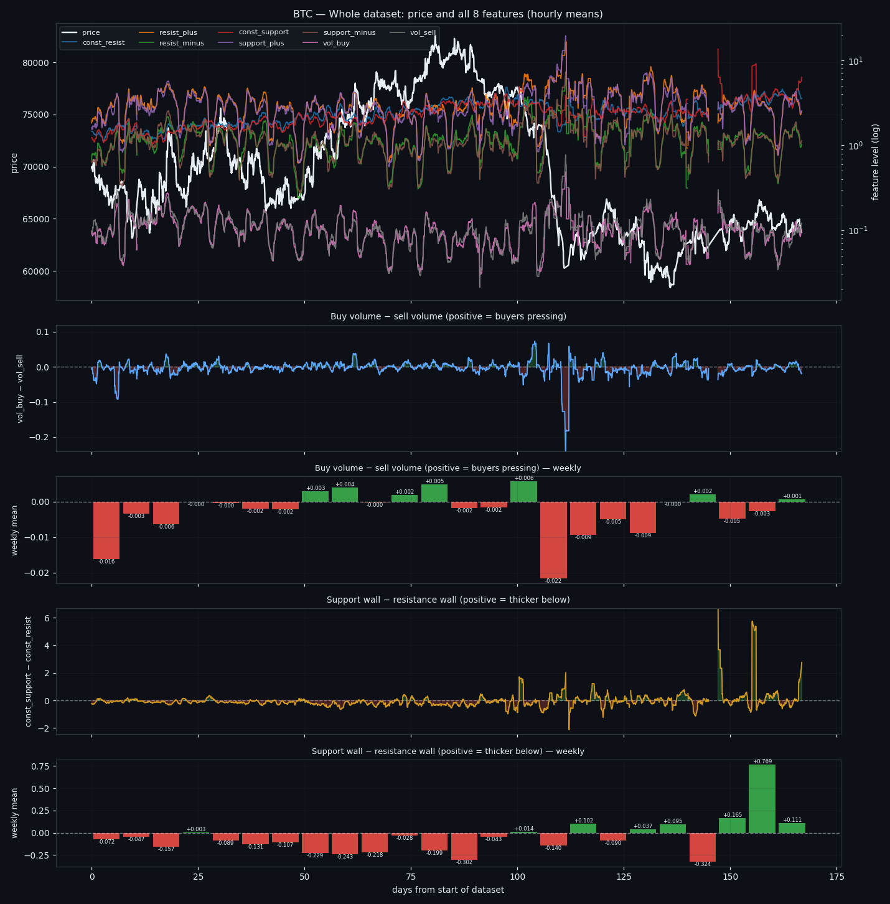
② What "normal" actually means
Our first definition of normal was "every feature within ±5% of its 100-hour average". That band turns out to be empty: it covers 0.00% of all time. Order-book features are heavy-tailed — a five-minute level routinely swings tens of percent while nothing notable happens — so the band has to be measured, not assumed. Calibrating on the whole dataset puts the working threshold at +50% over the norm, which leaves the market calm 47% of the time. Roughly half the clock is ordinary, half is events. That balance is what makes the two states worth comparing at all.
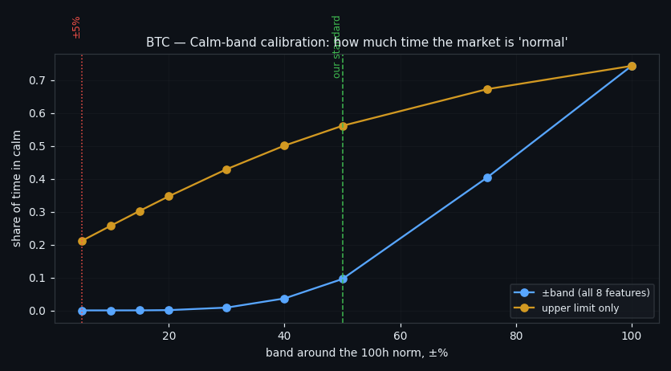
③ The anatomy of one event
Here is a single signal, drawn as multiples of each feature's own norm. Everything starts flat near 1×, one or more features lift off, the burst runs, and the event closes only when the whole book has settled back. On BTC we find 2788 events over 167 days: 897 bursts (a peak of at least 3× the norm), 283 lulls (activity draining below normal) and 1608 minor wobbles that left calm without ever becoming a burst. Bursts alone come at 5.37 per day, and all events together occupy 35% of the clock.
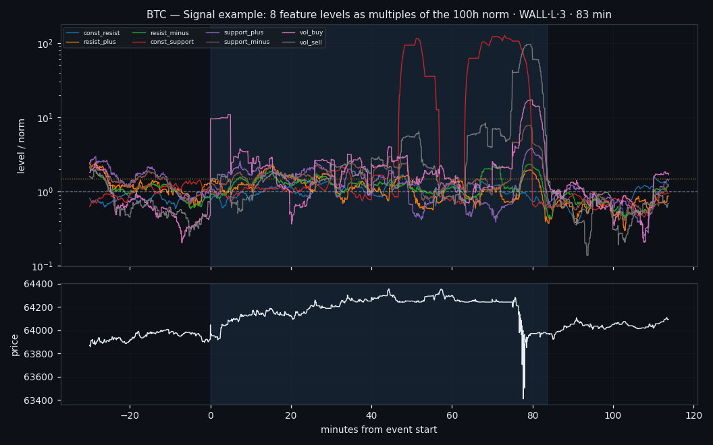
④ Duration is the first axis
Event length spans three orders of magnitude, so we cut it into terciles measured on this coin: short (up to 13 min), medium (to 30 min) and long. The distribution is strongly skewed — most signals are minutes, a few run for hours, and the longest class (INFL·L·3) has a median of 186 minutes. Duration is not a cosmetic label: it is the axis that separates a passing flurry from a regime that the book sustains, and later it turns out to matter for where the event sits on the price path.
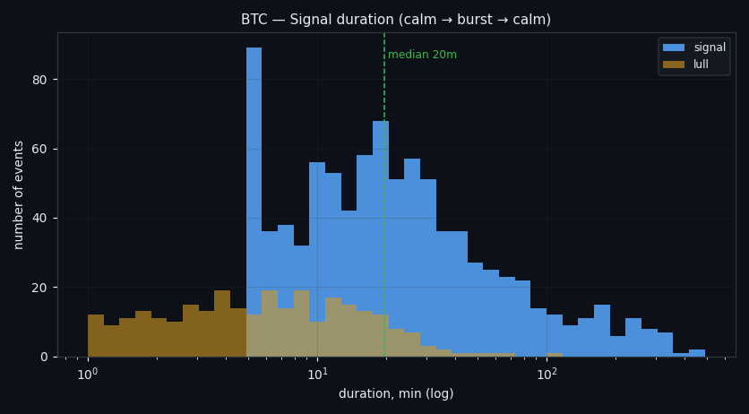
⑤ The class system
Each event is labelled LEADER-GROUP · DURATION · INTENSITY. The leader group is whichever family deviated most from its own norm: the resting walls (WALL), inflow into them (INFL), drain out of them (DRAIN), or executed volume (VOL). Intensity is the peak over norm, again in terciles. That gives 35 populated burst classes on BTC, led by VOL·S·1 with 109 events (median 7 min, peak 3.5× norm). Alongside the label, every event carries its full passport — mean per-second level of all eight features, their peaks, their totals over the event, and which side of each feature pair dominated.
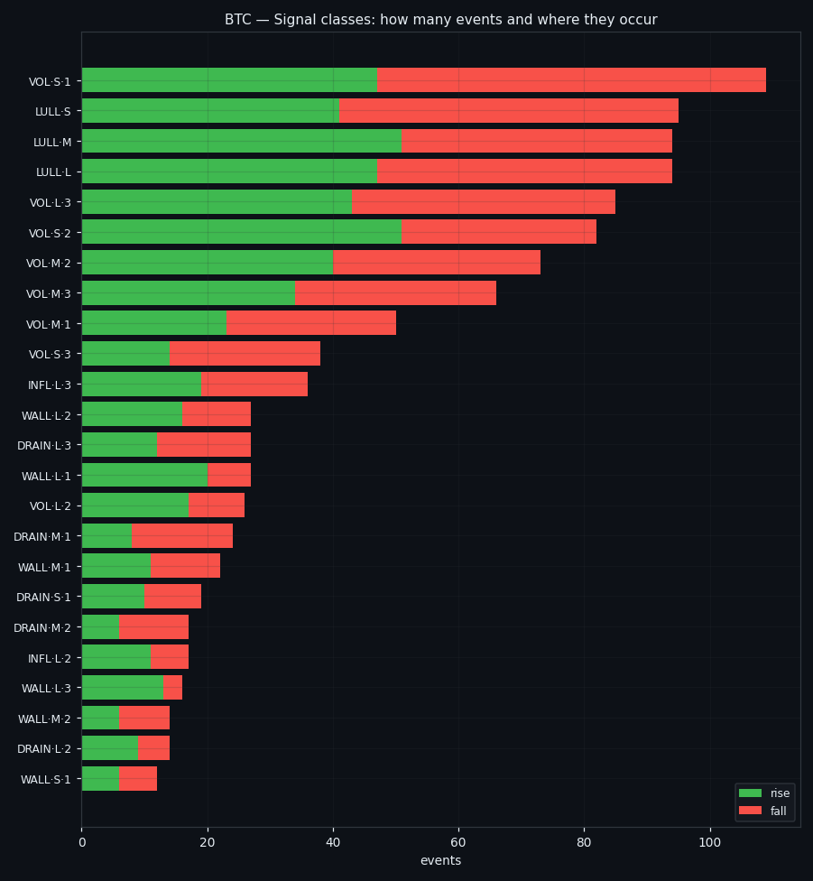
⑥ Who leads the burst
Executed volume leads most events — VOL heads 539 bursts against 141 for the walls, 130 for drain and 87 for inflow. That is the expected order: trades move faster than resting liquidity. The more interesting split is inside the volume family. Bursts led by buy volume and bursts led by sell volume are almost equally common, but they are not interchangeable — as the next section shows, they sit in very different places on the price path.
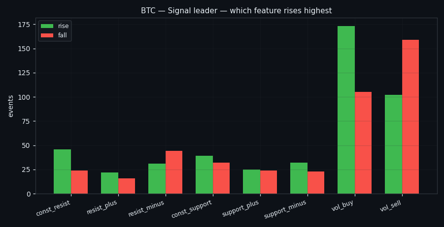
⑦ Pair dominance, measured against each feature's own norm
Inside each pair we ask who deviated more — but relative to its own norm, not in raw size. Raw comparison would be useless: inflow is nearly always bigger than drain in absolute terms, so the "winner" would be fixed in advance. Normalised, the four pairs split into genuine contests: buy vs sell volume, support wall vs resistance wall, inflow vs drain on each side. This is the part of the passport that carries direction information — the rest of the passport is about size.
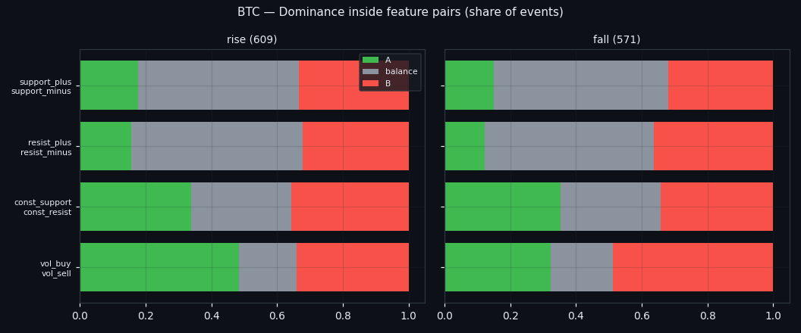
⑧ Where each class shows up
Now the location test. A ZigZag with a 1.2% reversal threshold splits the history into 213 rising stretches (1986 h) and 214 falling ones (2013 h) — almost exactly balanced, so counts can be compared directly. Every event is assigned to the stretch containing its midpoint, and each class is tested against the share of rising time with a binomial test, Benjamini-Hochberg corrected. Rates are also reported per 100 hours of rising and of falling time, because raw counts would otherwise reward whichever regime lasted longer.
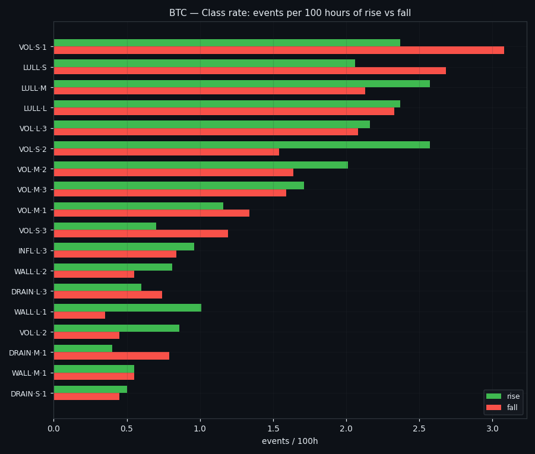
⑨ What actually separates rising from falling
The location test is blunt about which parts of the passport carry information: bursts where buy volume deviated more sit in rising stretches 64% of the time (n=373, q=0.000), while sell-dominated bursts sit there only 39% (n=353, q=0.000); the same split by leader: vol_buy-led 62% rising vs vol_sell-led 39%; long events lean rising (58%, n=299, q=0.008) while short and medium ones are a coin flip; bursts where inflow into the resistance wall outran its drain appear in rising stretches 66% of the time (n=113, q=0.003). Two of these are mechanical and we say so plainly — buy-led bursts live in rising stretches because buying is what makes a stretch rise. The non-obvious ones are duration and the inflow/drain balance: how long the book stays out of calm, and which side of a wall is being built rather than eaten, both separate rising from falling without referring to price at all.
⑩ The other half: the calm states
Between any two events sits a calm state, and it deserves the same treatment. There are 4255 of them here, median 11 minutes, together 47% of the clock. Each gets its own passport: how long it lasted, whether price drifted up or down while the book was quiet, what price did in the event before and the event after, and what the neighbouring calms did. Classes follow the same logic as events — CALM · duration · direction — with "flat" defined as the bottom tercile of absolute drift (0.045%), so a third of calms are flat by construction. Quiet is not empty: even the flat ones drift by hundredths of a percent, and the long ones carry a directional lean of about 0.14%.
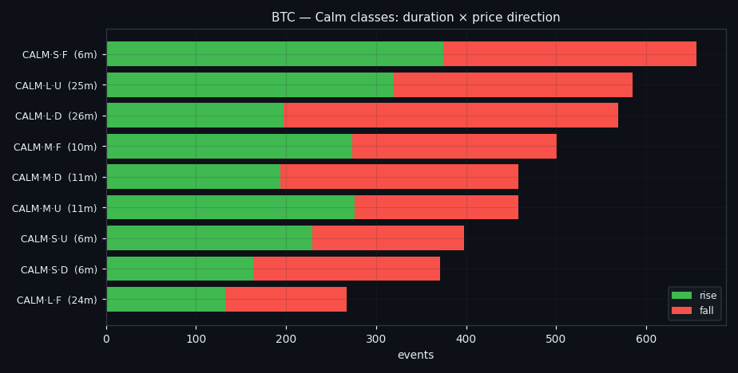
⑪ Is there a lull before the storm?
The folklore says a long silence charges the market up. On this data it does not: the correlation between how long the market stayed quiet and how big the next event's move turned out to be is ρ = -0.0369 (n = 2788) — indistinguishable from nothing; and grouped by tercile it even leans the wrong way: after the shortest calms (median 6 min) the next event moves 0.073%, after the longest (25 min) only 0.061%, with the share of true bursts flat at 32%; longer calm is also followed by a shorter event (ρ = -0.1346). What the calm state does carry is a weak tendency to reverse rather than continue: price drift during a calm is negatively related to the drift of the next calm (ρ = -0.0583, p = 0.000143) and to the move of the next event (ρ = -0.0686, p = 0.000287), and the transition matrix says the same — after an up-drifting calm the next calm falls 37% of the time against 34% rising, and after a down-drifting calm the next event goes up 39% versus 30% down. Flat is the stickiest state of all: a flat calm is followed by another flat calm 42% of the time. Quiet begets quiet; it does not accumulate pressure.
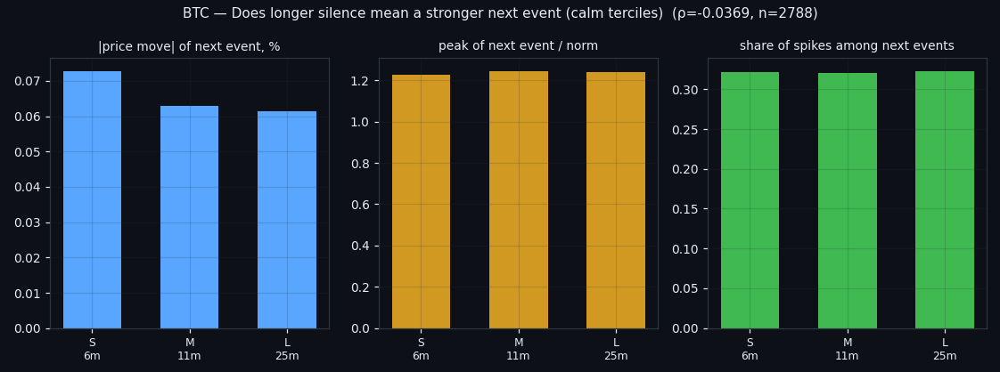
⑫ What this is not
ZigZag pivots are known only after the reversal has happened, so "this class lives in rising stretches" describes the past — it is not a forecast and cannot be traded as one. Class-level skews are thin at the tails and mostly do not survive multiple-comparison correction; the slice-level tests are the honest layer. And this is one symbol. The definition, the calibration table, the passport and the class system are deliberately built to be identical on every market, so the next step is the same run on the remaining five coins — and the real question there is which classes keep their location preference and which turn out to be artefacts of a single market.
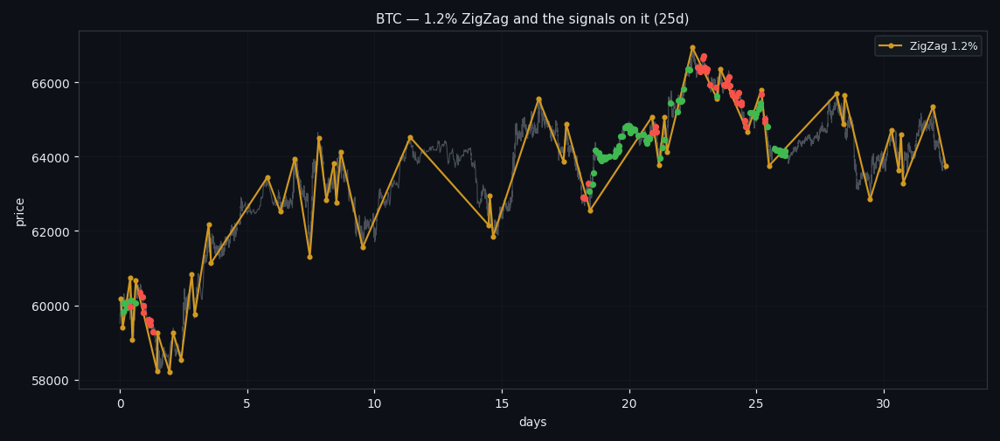
All our bots have been tested live. The best one is Line 7.
More than a dozen bots were built from this research. Line 7 — two small transformers that read 160 hours of order book as one picture — is the only one ahead of buy & hold in live trading: +5.44% since 5 Oct while BTC moved −5.29%. Every trade is in the report.
Everything on this site is research, not financial advice.
How to read this site in 5 minutes · All studies as one .md for AI · All research
← All research